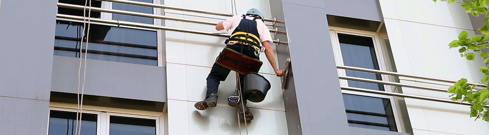

- Мойка стеклянных или других фасадов достаточно трудоемкое занятие особенно если высота здания более 3х метров высоту, но без него внешний вид магазинов, торговых или бизнес центров становится весьма неопрятным. Наши альпинисты готовы помочь вам сделать вешний вид ваших зданий сверкающим и привлекательным !
- Стоимость на мойку фасадов рассчитывается индивидуально для каждого объекта и зависит от интенсивности и специфики загрязнений, расположения объекта. Минимальный заказ от 5000 рублей.
